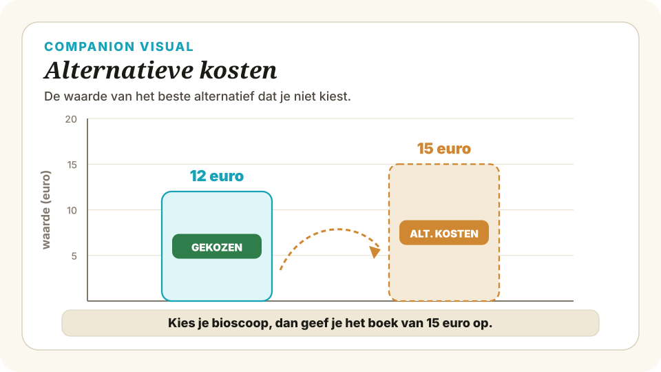
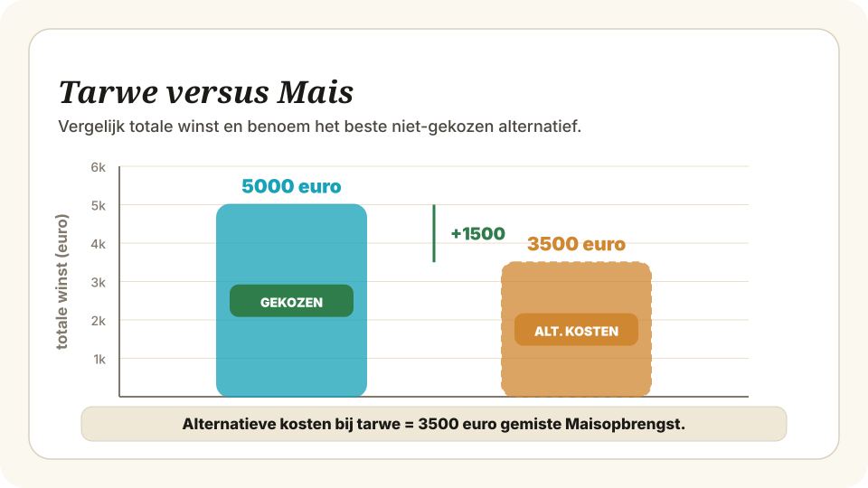

Schaarste en economisch denken — Begeleide inoefening
Oefeningen met denkstappen, formule-herinneringen en hints.
Beoordeel per situatie of er sprake is van schaarste. Leg telkens kort uit waarom wel of niet. Denk aan de definitie: er is schaarste als de behoeften groter zijn dan de beschikbare middelen.
Denkstappen
2. Benoem het middel: wat is er beschikbaar?
3. Vergelijk: is de behoefte groter dan het middel?
4. Conclusie: wel/geen schaarste + waarom moet er gekozen worden?
Hint
Toon antwoord
Behoefte: 28 leerlingen willen computeren. Middel: 18 computers.
Behoefte (28) > middel (18), dus er moet gekozen worden wie wel en wie niet achter een computer kan.
Denkstappen
2. Vergelijk dat met haar beschikbare tijd (3 uur).
3. Conclusie: moet ze kiezen of niet?
Toon antwoord
Behoefte: 1,5 + 1 + 2 = 4,5 uur aan activiteiten.
Middel: 3 uur vrije tijd.
Behoefte (4,5 uur) > middel (3 uur), dus Noa moet kiezen welke activiteit(en) ze laat vallen of inkort.
Denkstappen
2. Let op: bij deze concrete keuze, niet in het algemeen.
3. Is middel groter dan, gelijk aan, of kleiner dan de behoefte?
Hint
Toon antwoord
Behoefte: €7 (het stripboek). Middel: €10 zakgeld.
Middel (€10) > behoefte (€7), dus Tim kan zijn wens volledig vervullen — hij hoeft niet te kiezen.
Zou Tim méér willen dan €10 (bijvoorbeeld ook een shirt van €15 én het boek), dan zou er wel schaarste zijn.
Max heeft zaterdagavond €25 te besteden. Hij twijfelt tussen twee opties: een pizza-avond met vrienden (waarde voor Max: €30 aan plezier) of een nieuwe game die in de aanbieding is (waarde voor Max: €22 aan speelplezier). Hij kan maar één ding kiezen.
Denkstappen
2. Wat is per optie de opbrengst (waarde) voor Max?

Toon antwoord
Alternatief 2: nieuwe game — opbrengst €22
Opbrengst van dat alternatief: €.........
Alternatieve kosten: €.........
Denkstappen
2. Wat is de opbrengst van dat niet-gekozen alternatief?
3. Alternatieve kosten = opbrengst van het beste niet-gekozen alternatief.
Formule-herinnering
Toon antwoord
Opbrengst van de game: €22.
Alternatieve kosten = €22 (het speelplezier dat hij misloopt)
Denkstappen
2. Alternatieve kosten (= opbrengst beste niet-gekozen)?
3. Is de opbrengst groter dan de alternatieve kosten?
Formule-herinnering
Toon antwoord
Optie 2: Examen leren — betere cijfers (waarde voor Sam: €35)
Optie 3: Festival met vriendinnen — plezier (waarde voor Sam: €40)
Optie 2: Examen leren — betere cijfers (waarde voor Sam: €35)
Optie 3: Festival met vriendinnen — plezier (waarde voor Sam: €40)
Sam heeft een vrije zaterdag (6 uur). Zij kan maar één activiteit doen. Zij twijfelt tussen drie opties:
Denkstappen
2. Rangschik van groot naar klein.
Toon antwoord
2. Festival: €40
3. Examen leren: €35
Beste niet-gekozen alternatief: .................
Alternatieve kosten: €.........
Denkstappen
2. Welke van die twee heeft de hoogste opbrengst? (Dat is het 'beste niet-gekozen alternatief'.)
3. Alternatieve kosten = de opbrengst van dat beste niet-gekozen alternatief — NIET de som.
Formule-herinnering
NIET: som van alle niet-gekozen opbrengsten
Let op
Toon antwoord
Beste niet-gekozen: de bijbaan (€48 > €35).
Alternatieve kosten = €48
Niet €48 + €35 = €83: Sam had ook maar één van die twee kunnen doen, niet allebei.
Denkstappen
2. Alternatieve kosten (uit 3b)?
3. Is opbrengst groter of kleiner dan alternatieve kosten?
4. Conclusie: verstandig of niet?
Toon antwoord
Suikerbieten: €600 winst per hectare
Aardappelen: €520 winst per hectare
Beschikbaar: 12 hectare
Suikerbieten: €600 winst per hectare
Aardappelen: €520 winst per hectare
Beschikbaar: 12 hectare
Een akkerbouwer heeft 12 hectare land (haar schaarse middel). Zij kan kiezen uit drie gewassen. De winst per hectare verschilt per gewas. Zij gebruikt al haar land voor één gewas.
Suikerbieten: 12 × €600 = €........
Aardappelen: 12 × €520 = €........
Denkstappen
2. Hier: eenheden = hectares (12); opbrengst per eenheid = winst per ha.
3. Doe dit voor alle drie gewassen.
Formule-herinnering
TO = q × o

Toon antwoord
Suikerbieten: 12 × €600 = €7.200
Aardappelen: 12 × €520 = €6.240
Beste niet-gekozen: ................. (€.........)
Alternatieve kosten: €.........
Denkstappen
2. Welk gewas levert het meest op? → dat is de beste keuze.
3. Welke twee gewassen blijven over? Welke van die twee heeft de hoogste opbrengst?
4. Alternatieve kosten = opbrengst van het beste niet-gekozen alternatief.
Formule-herinnering
Toon antwoord
Niet gekozen: aardappelen (€6.240) en tarwe (€5.400).
Beste niet-gekozen alternatief: aardappelen (€6.240 > €5.400).
Alternatieve kosten = €6.240
Denkstappen
2. Dit is de extra winst die ze boekt dankzij de beste keuze.
Formule-herinnering
Toon antwoord
Optie B: Boek — prijs €15, waarde €20
Optie C: Pizza — prijs €10, waarde €12
Optie D: Streamingabonnement — prijs €8, waarde €14
Budget: €30
Optie B: Boek — prijs €15, waarde €20
Optie C: Pizza — prijs €10, waarde €12
Optie D: Streamingabonnement — prijs €8, waarde €14
Budget: €30
Luuk heeft €30. Hij maakt een lijstje van vier dingen die hij zou willen kopen. Hij mag combineren zolang zijn totale uitgaven €30 niet overschrijden. De waarde (hoe blij hij ervan wordt) heeft hij er zelf bij geschreven.
Denkstappen
2. Tel de prijzen bij elkaar op: mag niet boven €30 uitkomen.
3. Geef bij elke combinatie de totale prijs.
Hint
Toon antwoord
Combinatie 1: A + B = €12 + €15 = €27 ✓
Combinatie 2: A + C + D = €12 + €10 + €8 = €30 ✓
Combinatie 3: B + D = €15 + €8 = €23 ✓
Ongeldig zou bijvoorbeeld zijn: A + B + C = €12 + €15 + €10 = €37 (boven €30).
Combinatie ...: waarde €.......... prijs €..........
Combinatie ...: waarde €.......... prijs €..........
Beste combinatie: ...........................
Denkstappen
2. Stap 2: wat is de totale waarde van elke haalbare combinatie?
3. Stap 3: welke combinatie levert de hoogste totale waarde op? Welke 'geef je op'?
Formule-herinnering
beperking: som van prijzen ≤ budget (€30)
Let op
Toon antwoord
Plan 2: Renovatie schoolgebouw — kosten €2.000.000, opbrengst €3.200.000
Plan 3: Aanleg stadspark — kosten €2.000.000, opbrengst €2.500.000
Beschikbaar budget: €2.000.000 (voor één plan)
Plan 2: Renovatie schoolgebouw — kosten €2.000.000, opbrengst €3.200.000
Plan 3: Aanleg stadspark — kosten €2.000.000, opbrengst €2.500.000
Beschikbaar budget: €2.000.000 (voor één plan)
Een gemeente heeft €2.000.000 (2 miljoen euro) beschikbaar voor één groot project. De wethouder overweegt drie plannen. Het ambtelijk apparaat heeft per plan de geschatte maatschappelijke opbrengst uitgerekend (in euro's, op basis van tijdsbesparing, veiligheid en gebruik).
Denkstappen
2. Welke alternatieve bestemmingen zijn er voor dit middel?
3. Wat is van elk alternatief de opbrengst?
Toon antwoord
Stap 1 — alternatieven: fietsbrug, schoolrenovatie, stadspark.
Stap 2 — opbrengsten:
• Fietsbrug: €2.800.000
• Schoolrenovatie: €3.200.000
• Stadspark: €2.500.000
Gekozen: .........
Beste niet-gekozen: ......... (€.........)
Alternatieve kosten: €.........
Denkstappen
2. Haal het gekozen alternatief eruit.
3. Het resterende hoogste = beste niet-gekozen = alternatieve kosten.
Formule-herinnering
Toon antwoord
Gekozen: schoolrenovatie (€3,2 mln).
Beste niet-gekozen: fietsbrug (€2,8 mln > €2,5 mln).
Alternatieve kosten = €2.800.000 (de maatschappelijke opbrengst van de fietsbrug die de gemeente misloopt).
Denkstappen
2. Beoordeel: is de nettowaarde positief of negatief?
3. Positief → economisch verstandige keuze. Negatief → een ander alternatief was beter.
Formule-herinnering
Toon antwoord
Nettowaarde = +€400.000.
Advies: de schoolrenovatie is de economisch verstandigste keuze. De opbrengst overtreft de alternatieve kosten met €400.000. Elk ander plan zou een negatieve nettowaarde opleveren ten opzichte van de schoolrenovatie.
Denkstappen
2. Denk aan wat ze niet kunnen doen met hetzelfde geld.
3. Zijn alternatieve kosten ook 'echte' kosten, ook al worden ze niet uitbetaald?
Hint
Toon antwoord
Door voor de schoolrenovatie te kiezen, geeft de gemeente de fietsbrug op. Die fietsbrug zou €2.800.000 aan maatschappelijke waarde hebben opgeleverd.
De 'echte' kosten van de schoolrenovatie zijn €2.800.000 aan gemiste brug-waarde — bovenop de €2 miljoen aan uitgegeven geld.
De keuze is nog steeds verstandig (nettowaarde +€400.000), maar 'kost ons niets' klopt niet: elk gekozen alternatief kost wat je opgeeft.
| Schaarste | Behoefte > middel → er moet gekozen worden. Geldt voor scholier, boer én overheid. |
| Schaarste ≠ weinig | Het gaat om de verhouding behoefte ÷ middel, niet om absolute aantallen. |
| Alternatieve kosten | Opbrengst van het beste alternatief dat je opgeeft bij een keuze. |
| Geen som | Alternatieve kosten zijn NOOIT de som van alle niet-gekozen opties — alleen de beste. |
| Opbrengst schaars middel | TO = aantal eenheden × opbrengst per eenheid (q × o). |
| Nettowaarde keuze | opbrengst gekozen − alternatieve kosten. Positief = verstandige keuze. |
| Economisch denken (4 stappen) | 1) Alternatieven benoemen 2) Opbrengst per alternatief 3) Beste niet-gekozen = alternatieve kosten 4) Nettowaarde bepalen. |